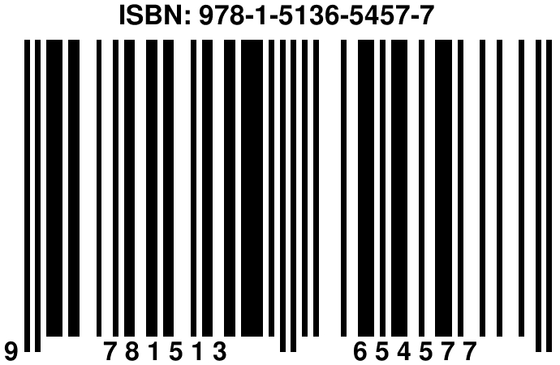

References
ISBN
ISBN information:
https://www.isbnagency.com/titles/9781513654577

Adams, Ali. 2020. “114 Mathematical Structure of the Quran.” 2020. qurancode.com/114.pdf.
Akdemir, İmran. 2018. İKİZKOD. İtalik Kitapları. http://www.ikizkod.com/ikizkod.pdf.
Altay, Gökmen. 2008. “Performance of Systematic Distance-4 Binary Linear Block Codes with Continuous Phase Frequency Shift Keying over MIMO Systems.” Wireless Personal Communications 44: 403–13. https://doi.org/https://doi.org/10.1007/s11277-007-9364-2.
Altay, Gökmen, and et.al. 2006a. “Geometric Augmented Product Codes.” IEE Proceedings-Communications 153 (5): 591–96. https://doi.org/https://doi.org/10.1049/ip-com:20050595.
———. 2006b. “Heuristic Construction of High-Rate Linear Block Codes.” AEU - International Journal of Electronics and Communications 60 (9): 663–66. https://doi.org/https://doi.org/10.1016/j.aeue.2005.12.004.
Dowle, Matt, and Arun Srinivasan. 2019. Data.table: Extension of ‘Data.frame‘. https://CRAN.R-project.org/package=data.table.
Eddakrouri, Ayman. 2016. “Ba’da and Qabla in Online News: A Corpus-Based Study.” Master’s thesis, The American University in Cairo, The Department of Applied Linguistics.
“Good Calculators.” 2019. 2019. https://goodcalculators.com/big-number-calculator/.
Lucas, Antoine, Immanuel Scholz, Rainer Boehme, Sylvain Jasson, and Martin Maechler. 2019. Gmp: Multiple Precision Arithmetic. https://CRAN.R-project.org/package=gmp.
Mullen, Lincoln A., Kenneth Benoit, Os Keyes, Dmitry Selivanov, and Jeffrey Arnold. 2018. “Fast, Consistent Tokenization of Natural Language Text.” Journal of Open Source Software 3: 655. https://doi.org/10.21105/joss.00655.
Ryding, Karin C. 2005. A Reference Grammar of Modern Standard Arabic. Cambridge University Press.
Saleem, Shehzad. 2018. History of the Quran- a Concise Study. Al-Mawrid.
Saleem, Shehzad, and Gokmen Altay. 2020. “Preservation of Quran.” 2020. https://youtu.be/1Y64epJ9_h0?si=zo4L0V4YRwXSJFne.
Sharaf, Abdulbaqi. 2019a. “First Steps in Text Mining the Quran.” 2019. http://textminingthequran.com/tutorial/tm.html.
———. 2019b. “R Ing with the Quran.” 2019. http://textminingthequran.com/tutorial/quran.html.
Wickham, Hadley. 2019. Stringr: Simple, Consistent Wrappers for Common String Operations. https://CRAN.R-project.org/package=stringr.
Xie, Yihui. 2016. Bookdown: Authoring Books and Technical Documents with r Markdown. Chapman; Hall/CRC.
Xie, Yihui, Joe Cheng, and Xianying Tan. 2019. DT: A Wrapper of the JavaScript Library ’DataTables’. https://CRAN.R-project.org/package=DT.